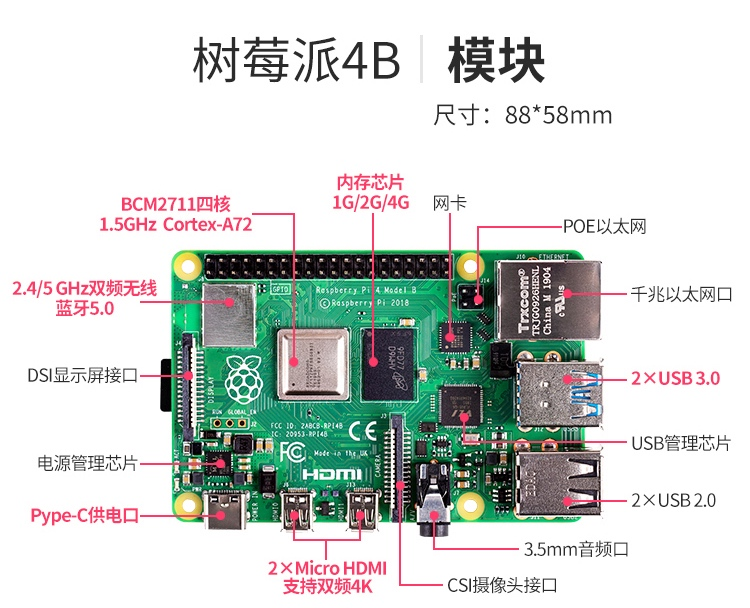
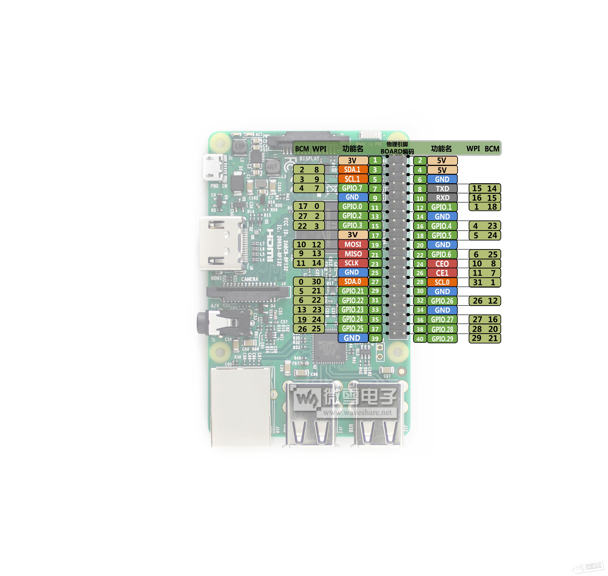
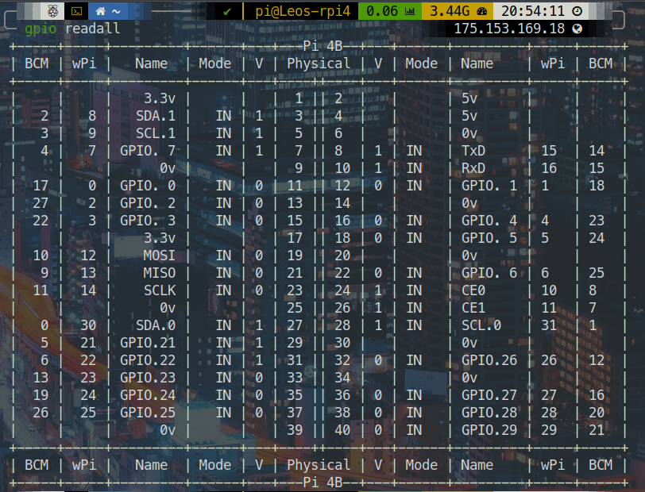

因为我是一个记性很差并且接触东西很杂的人, 很多很基础的命令根本记不住,但每次都去查一遍很浪费时间, 于是整理一下. 这是树莓派相关的.
首先不得不说树莓派官方文档实在是文档范本! 即便是初学者也能得到友好全面的帮助! 文档里包含了使用树莓派的绝大多数完整, 深入的教程, 而且方法都十分清爽 😆

放一张树莓派4B布局图
关于树莓派4
我买了一个4GB的DDR4内存的树莓派4B, 性能确实比树莓派3B+强大很多! 运行图像识别的python程序完全不成问题, 通过VNC的虚拟桌面, 用网页看b站高清视频只有40%的内存在被使用, 温度也并不高. 属实牛皮.
而我觉得最神奇的是树莓派4B的UART. 在树莓派3上使用UART一直是个麻烦事, 因为一共只内置两个UART, 其中一共是阉割版, 仅有的一个PL011 UART (硬件UART) 还默认被蓝牙模块占用了. 而树莓派4就很🐮🍺了. 他内置六个UART, 5个PL011 UART, 1个阉割UART. 开始看树莓派4引脚分配表时还以为我理解错了, 直到我看到这句话
11.1. Overview
The BCM2711 device has six UARTs. One mini UART (UART1) and five PL011 UARTs (UART0, UART2,UART3, UART4 & UART5). This section describes the PL011 UARTs
🔗 开启UART2~5后从哪些GPIO端口连接参见树莓派4片上系统datasheet的11.3. Primary UART Inputs and Outputs.
GPIO
放两张好看的树莓派引脚对照表 (实际上两张都不完善)


🔗 这个交互式引脚排布图对每种接口的介绍很详细.
运行gpio readall可以打印一张包含引脚真实输入/输出值的引脚表. 对于树莓派4需要手动操作一下更新wiringPi至版本2.52, 否则无法识别. 操作参考wiringPi updated to 2.52 for the Raspberry Pi 4B

但gpio readall无法打印出每个引脚所有可用功能, 而运行raspi-gpio funcs可用打印所有gpio的上拉/下拉, 所有可用功能.
树莓派官方文档列出了几个很好用的gpio库, 其中这个GPIO Zero将GPIO分类封装成了一些很简洁的类, 看起来很值得一试.
wiringPi的开发者被嘴臭网友喷自闭了, 停止维护项目了, 现在GPIO Zero是最好的代替, 安装后执行
pinout也可以输出一个很直观的引脚功能表.
串口
如前面提到的, 树莓派4内置6个UART. 关于如何同时使用多个UART可用看看这个讨论. 截止目前树莓派还没有就此更新官方文档.
泪目, 官方更新文档详细介绍各代树莓派主副串口如何分配, mini-UART是什么, 以及如何配置了: 文档
官方文档给出了这样几个概念:
- 主串口: 从
GPIO14,GPIO15(引脚8, 引脚10) 连接到的串口. 主串口默认绑定了Linux串口控制台, 可以在raspi-config中关闭, 变成正常串口. - 副串口 (蓝牙串口): 副串口无法直接从40pin端口连接到, 在大部分树莓派中都是连接到了蓝牙模块, 基本上是只能给蓝牙用的串口.
- PL011串口: 遵循ARM提出的PL011电气规格的串口, 包括UART0, UART2, UART3, UART4, UART5 (后四个只有树莓派4有)
- mini串口: 丐版串口, 包括UART1, 我感觉是专门拿来连蓝牙的.
比如说在树莓派3中UART0默认分配为了蓝牙串口, mini串口被分配为了该从GPIO14, GPIO15连接的主串口, 但mini串口不管作为主串口还是副串口都默认没有开启, 因此手动开启mini串口后才可以从GPIO14, GPIO15连接到mini串口的UART1.
💡看过上面的BCM2711的datasheet会发现无法从树莓派的40pin端口上连接到mini串口的UART1, GPIO32, GPIO33或者GPIO40, GPIO41都没有被实现到这个40pin端口上. 因此我估计要想连到UART1只能将mini串口作为主串口, 从GPIO14, GPIO15连.
PL011串口与mini串口的区别根据树莓派官方文档总结下来就是:
- mini串口的FIFO更小而没有流控制功能, 因此在高波特率下更容易丢帧
- mini串口的时钟参考源是系统时钟, 因此很可能一直在变化, 因此波特率是不稳定的 (因此使用时要求固定系统时钟频率)
- mini串口没有断线检测
- mini串口没有没有帧错误检测
- mini串口没有奇偶校验位
- mini串口没有接收超时中断
- mini串口没有DCD，DSR，DTR或RI信号
emmm看起来就是个废物呢. 我感觉就拿来作为蓝牙串口就好.
关于如何在树莓派3B+等设备上启动UART0与外部通信, 官方教程是通过添加设备树overlay的方式来实现的. disable-btoverlay会禁用蓝牙并使UART0成为主串口, miniuart-bt会切换蓝牙到使用mini串口并使UART0成为主串口, 但这样会限制蓝牙的最大波特率 (我觉得影响不大).
故障提示
固件警告图标
有时候屏幕右上角会有表示异常状态图标出现 (如果你有显示屏的话), 图标及对应含义如下:
- ⚡ 闪电 : 电源电压不足
- 🌡 温度计: 温度过高
🔗 对应官方文档
(以前还有种表示电源电流不足的彩虹图标, 看文档现在似乎没有这个了)
LED警告闪烁代码
如果树莓派因为一些神秘原因无法启动或者需要断电, 电源插口旁边的LED会以特定次数闪烁, 闪烁代码及对应状态查看对应官方文档
VNC使用
VNC使用的官方文档已经把大多数东西都说清了. 值得一提的是如果树莓派没有连接显示器, (这特么不是废话吗, 如果有屏幕谁还需要VNC😅) 直接用RealVNC访问树莓派ip很可能看到的不是树莓派界面, 而是看到Cannot currently show the dekstop这样的字样. 树莓派官方对这种情况给出的办法是使用虚拟桌面, 每次需要手动启动. 而上面这个链接里提到其实只需在raspi-config中手动指定一个分辨率就能正常使用了, 亲测有效.
💡 我觉得VNC也就是偷懒用的, 虽然ssh无法看到画面但大多数需要看到画面的需求都可以用别的方式满足. 比如使用sshfs来将树莓派文件当做本地文件编辑, 比如通过创建RTSP (实时视频流)或者使用RPi-Cam-Web-Interface这样成熟的工具实现远程查看摄像头输出/自定义视频流.
当然如果你想玩树莓派自带的那些推荐软件那当我没说 😁
开启VNC的server与viewer的剪贴板共享
在linux中执行
1 | vncconfig -nowin& |
屏幕调节
禁止息屏
最近买了一块7寸触摸显示屏😁 (不我没有在炫耀), 发现系统默认开启了息屏功能, 但我的应用场景要求屏幕常亮. 问题不大, 这个可以禁用. 在网上看到了两种方法:
通过Raspbian默认桌面显示管理器lightdm
进入 /etc/lightdm/lightdm.cfg, 找到 [Seat:*] 字段, 取消xserver-command 的注释, 设置为:
1 | xserver-command=X -s 0 -dpms |
⚠️ 需要重启树莓派
其中:
-s设置屏幕保护不启用-dpms关闭电源节能管理, 我猜这是 Display Power Managemant System的缩写
使用Screen.sh
在 /etc/profile.d/下新建Screen.sh, 写入:
1 | xsetdpms 0 0 0 |
⚠️ 需要重启树莓派
列出一些相关指令及其含义
| 指令 | 说明 |
|---|---|
| xset s off | 禁用屏幕保护 |
| xset s 3600 3600 | 设置空闲时间为1小时 |
| xset -dpms | 关闭 DPMS |
| xset s off -dpms | 禁用 DPMS 并阻止屏幕进入空闲 |
| xset dpms force off | 立即关闭屏幕 |
| xset dpms force standby | 强制屏幕进入待命状态 |
| xset dpms force suspend | 强制屏幕进入暂停状态 |
屏幕亮度调节
调节范围为0-255
1 | echo [value] > /sys/class/backlight/rpi-backlight/brightness |
关闭背光
看网上说法关闭背光和关闭显示屏的区别在于只关闭背光的话屏幕其实仍在工作, 如果自己拿光照还是能看到画面的. 也就是说关闭背光应该和将屏幕亮度调至0效果一样.
1 | echo 0 > /sys/class/backlight/rpi_backlight/bl_power |
0为开启背光，1为关闭背光. (我总觉得这和通常对01的理解不同)
查看CPU温度
1 | cat /sys/class/thermal/thermal_zone0/temp |
这个返回值除1000就是一个摄氏度单位的CPU温度值了